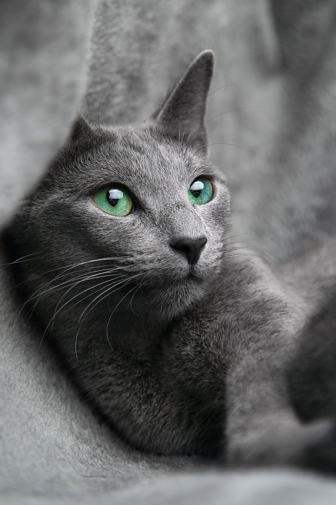

러시안 블루(Russian Blue)는 고양이 과 중 하나로 청회색의 단모종이다. 푸른빛이 도는 회색털과 초록색 눈으로 유명한 고양이이다. 러시아가 원산지 이고 조용하고 온순한 성격으로 잘 울지 않으며, 울어도 그 소리가 무척 작다.
확실한 기원은 아니지만, 북부 러시아의 아칸젤 섬에서 유래하였다고 알려져 있다. 원래는 아칸젤 블루 (Archangel Blue) 혹은 포린 블루 (Foreign Blue)로 알려졌었고, 1860년대에 선원들에 의해 영국과 북유럽으로 전해졌다고 전해온다. 러시아 왕가의 황실 고양이의 후손이었고, 빅토리아 여왕의 애묘였다고 하는데, 그 때문에 1875년 영국의 크리스탈 궁에서 아칸젤 고양이로 소개되었다. 러시안 블루가 들어올 당시 유럽에서 유행했던 고양이는 샤르트뢰로, 외모가 유사하던 러시안 블루는 샴고양이처럼 행동하도록 교육을 받았고, 브리티쉬종의 외관을 따라가게 교배시켰다. 이로 인해 독특한 특성을 점점 잃게 되어 후에 원조 아칸젤 고양이를 살리려는 영국인 브리더들이 러시안 블루의 외모를 복귀시키려는 노력을 해야만 했다. 1912년 독자적인 종으로 인정받고, 그 이후 영국과 미국, 스칸디나비아 브리더들이 혈통을 발전시켜 1960년대 큰 인기를 얻기 시작했다.